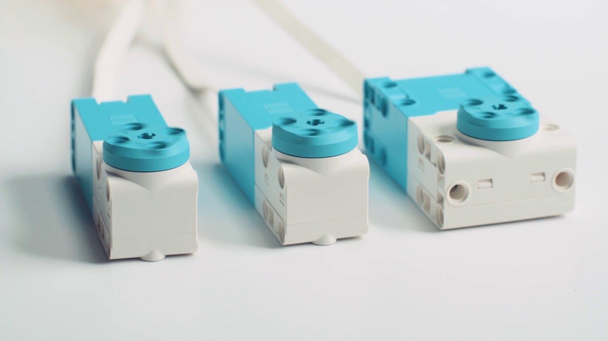
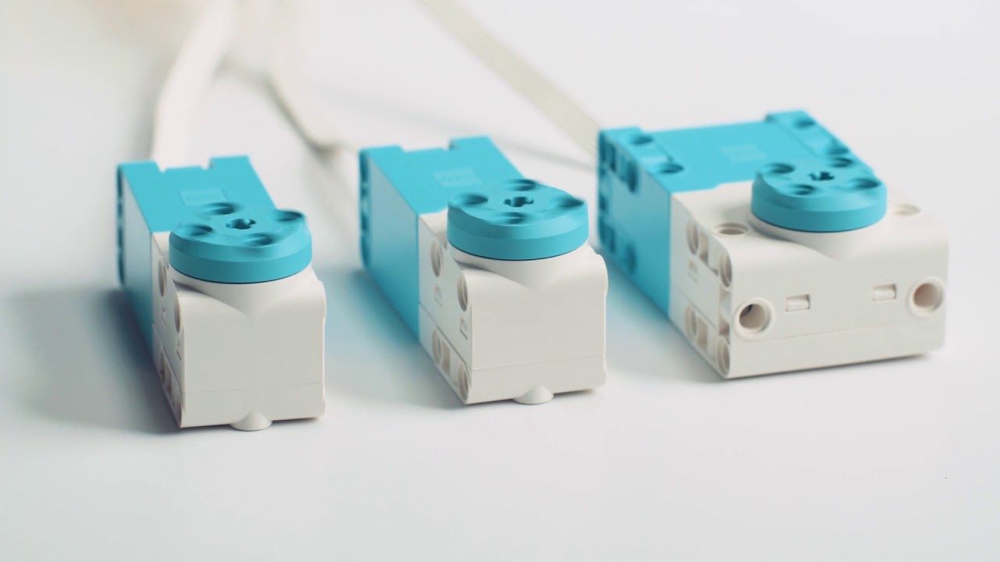
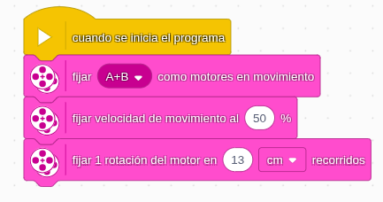
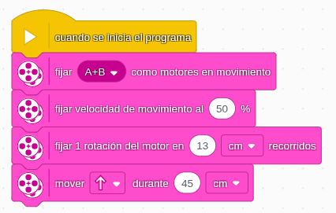
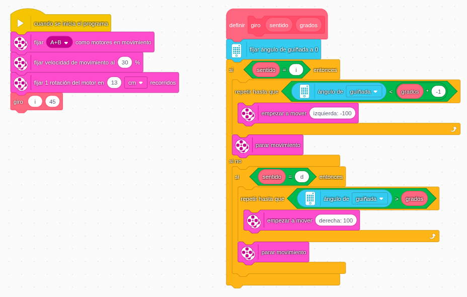
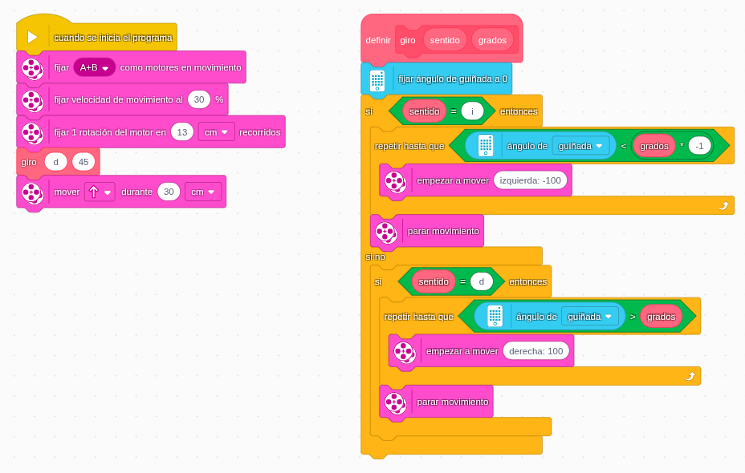

Para mover el robot este dispone de dos motores pequeños bastantes precisos con sensor de ángulo de giro.

Para mover el robot este dispone de dos motores pequeños bastantes precisos con sensor de ángulo de giro.

Para el avance del robot en línea recta en cm, es indispensable varias cuestiones:

Posteriormente, le podemos indicar que el robot avance una distancia determinada, con el bloque mover adelante o hacia atrás. El programa quedaría así:

El giro en nuestro robot vamos a proponer que se realice mediante pivotaje, que no es más que el robot rote sobre si mismo sin producir desplazamiento. Como los giros y pivotajes con el lenguaje de programación de Lego no son muy intuitivos, se ha desarrollado un bloque propio para realizarlos de forma fácil. Una vez cargado el programa base, el giro lo encontraremos en mis bloques. Os adjuntamos el programa con el bloque propio para que lo reutilicéis.
Aquí tenéis un ejemplo de cómo pivotar a izquierda 45º.

Para descargar los ficheros de programas debes hacer clic con el botón derecho del ratón, y guardar enlace como.
Debes girar el robot 45 grados hacia la derecha y moverlo en esa dirección 35 cm. El programa se llama movimiento_01.

Código:

Obra publicada con Licencia Creative Commons Reconocimiento Compartir igual 4.0